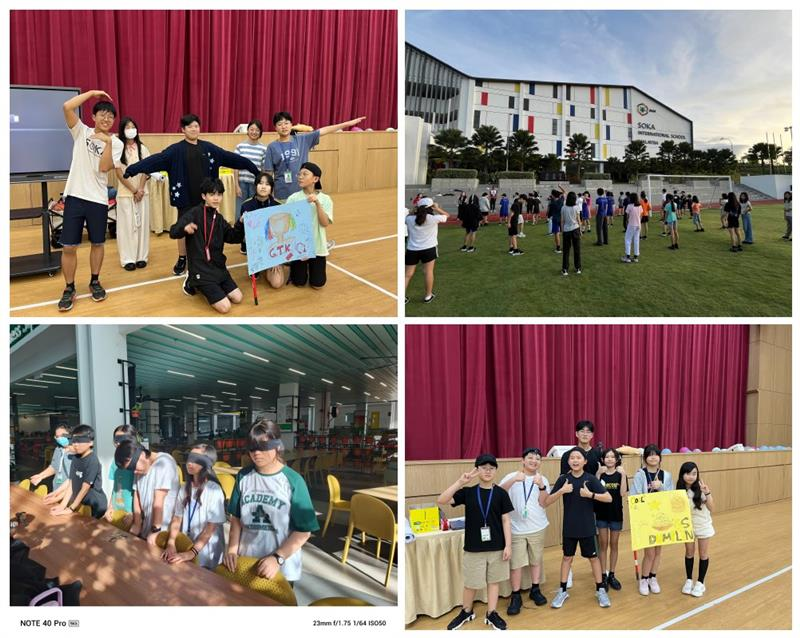
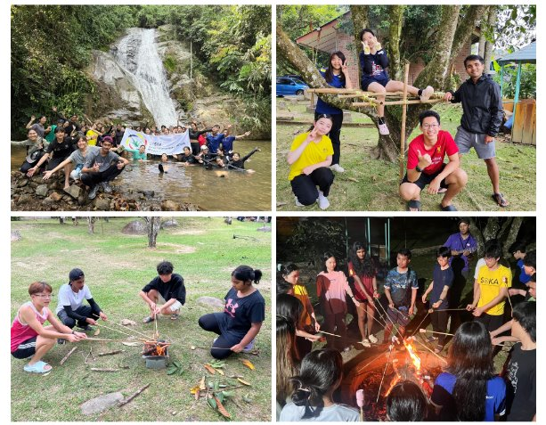

Year 7: Friendship Camp
📍Soka International School
Purpose: The school camp aims to establish friendship, as well as give students a better understanding of their own identity amogst their new peers.

Activity
1. Mind-Map Illustration: Expressing their own identity and what makes them unique.
2. Talent Show Night: Working together as a group to showcase their creativity, talent, and teamwork.
Year 8: Outdoor Camping
📍Janda Baik or Taman Negara, Malaysia
Purpose:
The Outdoor Camping Program ains to explore and understand how human beings and nature co-exist through outdoor activities and challenges.
Activity
1. Youth Outdoor Adventure: This specialized program challenges young people to go beyond their limits, be courageous, and overcome tough circumstances/challenging situations. Key components to this program involve outdoor camping, independent cooking, kayaking, jungle trekking, etc.